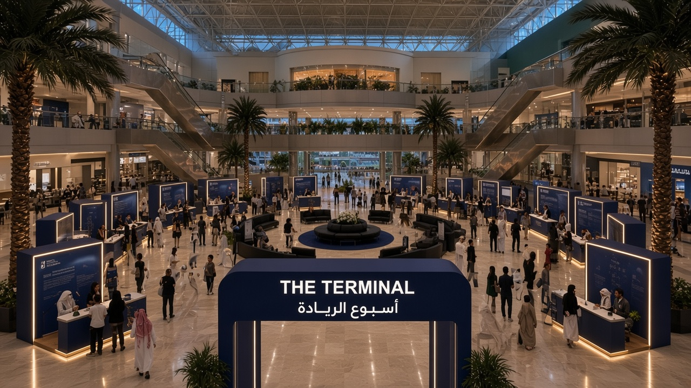

PRODUCTION PROPOSAL · THE TERMINAL
أسبوع الريادة 2026
التصور العام للفعالية والتنفيذ
02 · النبذة
وش هي الفعالية؟
أسبوع الريادة يبرز المشاريع والعلامات التجارية الطلابية، ويعطي أصحابها مساحة يعرضون فيها أفكارهم ومنتجاتهم أمام المجتمع الجامعي.
برانداتمشاريع وعلامات تجارية طلابية
تجاربمحطات تفاعلية داخل المسار
ريادةتعريف عملي بريادة الأعمال
تواصللقاء بين الطلاب وأصحاب المشاريع
أنشطةفعاليات مصاحبة قابلة للتطوير
الهدف: تجربة متكاملة. الزائر يعيش الفعالية وينتقل بين المحطات، مو بس يمر على طاولات.
03 · المعلومات
بطاقة الفعالية
| اسم الفعالية | أسبوع الريادة 2026 |
|---|
| التاريخ | 12–13 أكتوبر |
|---|
| الموقع | مبنى الطالبات · الأتريوم |
|---|
| الوقت | 9:00 صباحًا – 3:00 مساءً |
|---|
| الفئة المستهدفة | طلاب وطالبات الجامعة |
|---|
| عدد البوثات | تقريبًا 18 بوث |
|---|
| المدة | يومان |
|---|
رحلة الريادةوجهتك القادمة تنطلق من هنا. المساحة تتحوّل لمحطة سفر: بوابات، بوردنج، ومسار واضح.
الخطThmanyah Sans — عناوين حادة، كلام قليل، لغة بصرية أقرب لمحطة منها لمعرض تقليدي.
تم تصميم تجربة أسبوع الريادة لتكون رحلة متكاملة للزائر، تبدأ من لحظة الدخول، مرورًا بالبوثات والتجارب، وانتهاءً بمنطقة الخروج.
01الدخولبوابة التيرمنال من يسار كورنر الأمن.
02الاستقبالبوث البوردنج. Pass للزائر.
03الأمنكورنر التفتيش في منتصف المدخل.
04البوثاتاستكشاف ١٨ مشروعًا حول الأتريوم.
05التجاربأنشطة ومنطقة مركزية لاحقًا.
06الخروجمسار منفصل يمين الكورنر.
دخول وخروج منفصلان. الزائر ما يرجع من نفس المسار اللي دخل منه.
قراءة المخطط
يسار الكورنر: بوابة الدخول + بوث البوردنج
المنتصف: كورنر الأمن والتفتيش
يمين الكورنر: بوابة الخروج + بوث الخروج
١٨ بوث على جانبي الأتريوم
الوسط يبقى مفتوحًا — عنصر رئيسي يُعتمد لاحقًا
المسرح والشاشات: بنية قائمة في المبنى، ليست إنشاءً جديدًا
الشكلبوابة تيرمنال بهوية Navy. شعار أسبوع الريادة أعلى العتبة.
المسارالدخول من يسار كورنر الأمن بعد البوردنج.
الأمننقطة التفتيش تظهر مباشرة بعد العتبة، في المنتصف.
البوردنجكاونتر الاستقبال ملاصق لليسار قبل العبور.
بوابة الدخول هي نقطة البداية. الزائر يستقبل هوية أسبوع الريادة قبل ما يدخل منطقة الفعالية.
08 · البوردنج
بوث الاستقبال
BOARDINGمو بوث عرض. محطة دخول: كاونتر، شاشة وجهات، وPass للزائر.
الاستقبالفريق يستلم الزائر، يشرح المسار، ويسلّم بطاقة الجولة.
العنصر البصريخلفية Navy + شاشة بجدول الرحلة / هوية The Terminal.
09 · الأمن
كورنر الأمن والدخول
المنتصفكورنر الأمن ثابت في وسط مدخل الأتريوم. لا يتحرك يمين أو يسار.
مسار الدخولبوردنج ← يسار الكورنر ← بوابة الدخول.
مسار الخروجيمين الكورنر ← بوث الخروج ← بوابة الخروج.
الفصلمساران منفصلان. التدفق ما يتصادم عند التفتيش.
الترتيب المعتمد: دخول → بوردنج → كورنر الأمن في المنتصف → البوثات → خروج من اليمين.
10 · البوثات
منطقة المشاريع · ١٨ بوث
العدد١٨ تقريبًا
المقاس المقترح٢ × ٢ م
التوزيع٩ + ٩ على الجانبين
العرضكاونتر + رف منتجات
التخزينخزانة تحت الكاونتر
كهرباء / إضاءةLED + منفذ خلفي
11 · النظام
نظام تصميم البوثات
الهيكل الأساسي — موحّدكاونتر · خلفية · شعار أسبوع الريادة · إضاءة LED · مساحة عرض · منفذ كهرباء · لوحة اسم المشروع.
التخصيص — لكل براندألوان المشروع · المنتجات · العناصر الخاصة · اللوقو على الخلفية.
اللوحات التعريفيةاسم البراند + جملة واحدة عن المشروع. نفس القالب لكل البوثات.
هوية واحدة للمكان، ومرونة بسيطة لكل مشروع. الشركة تصمّم النظام مرة، ثم تكرّره ١٨ مرة.
12 · الوسط
المنطقة المركزية — قيد التطوير
الوسط يبقى فارغًا عن قصد. مو مساحة ناسية — محجوزة لعنصر رئيسي يُعتمد لاحقًا.
سيتم تخصيص المنطقة المركزية لعنصر رئيسي يدعم تجربة الزائر ويكون نقطة جذب بصرية داخل الفعالية، وسيتم اعتماد التصميم النهائي لاحقًا.
13 · الأنشطة
التجارب المصاحبة
مقترحات قابلة للتطوير — ليست حزمة نهائية.
- ورش عمل قصيرة
- تجارب تفاعلية عند البوثات
- تحديات ريادية سريعة
- ركن تصوير بهوية The Terminal
- مسابقات للزوار
- محتوى حي للشاشات
14 · المسرح
الشاشات القائمة
بنية موجودةالمسرح والشاشات جزء من المبنى. مو عنصر مطلوب إنشاؤه.
الاستخدام المقترحهوية الفعالية · جدول الأنشطة · عرض المشاريع · إعلانات التشغيل.
المطلوب من الإنتاجمحتوى بصري للشاشات + توجيه تشغيل، بدون بناء منصة جديدة.
الخطThmanyah Sans للعناوين والنصوص. إنجليزي للثيم: THE TERMINAL.
الاستخدامNavy للبوابات والهياكل. أبيض للكاونترات. Gold لنقاط المسار فقط.
- بوابة الدخول
- بوابة الخروج
- بوث البوردنج
- بوث الخروج
- ١٨ بوث مشاريع
- لوحات إرشادية
- لوحات أسماء المشاريع
- بطاقات Pass
- بطاقات تعريف
- ستاندات / ملصقات
- محتوى الشاشات
- بنرات وتعليقات سقفية عند الحاجة
17 · الإضاءة
Lighting direction
البوثاتLED تحت الكاونتر + صندوق إضاءة للخلفية.
البواباتحافة مضيئة بيضاء على الهيكل Navy.
العناصر الرئيسيةتأكيد بصري على المدخل فقط في هذه المرحلة.
الشاشاتالشاشات القائمة تُستخدم كمصدر ضوء هوية.
الاتجاهنظيف · عصري · احترافي · شبابي · ريادي
مقترح خاماتخشب فاتح · Acrylic · معدن · قماش · Vinyl · LED
ملاحظةمو مواصفات نهائية. اتجاه تصميم تعطونه الشركة قبل الـ 3D.
19 · 3D
الفيجوالز المطلوبة
- ١. منظور عام للفعالية
- ٢. منطقة الدخول
- ٣. بوث البوردنج
- ٤. كورنر الأمن
- ٥. منطقة البوثات
- ٦. بوث نموذجي
- ٧. منطقة الخروج
- ٨. المنطقة المركزية — لاحقًا
- ٩. لقطة علوية للتوزيع
- مرجع المكان: صور الأتريوم المرفقة
20 · النطاق
مطلوب من شركة الإنتاج
- التصميم والتنفيذ
- تصنيع البوثات
- تصنيع البوابات
- الطباعة
- الإضاءة
- محتوى وتشغيل الشاشات
- التركيب
- الفك
- التجهيز قبل الفعالية
- الإشراف أثناء التنفيذ
01اعتماد الفكرة
02التصميم ثلاثي الأبعاد
03اعتماد التصاميم
04التصنيع
05التركيب
12–13 Octالفعالية
22 · التسليم
نحتاج منكم تقديم
تصور 3D متكامل
مقترح تصميم البوابات
تصميم البوثات
تصور الدخول والخروج
مقترح الهوية في الموقع
المقاسات والخامات
احتياجات الكهرباء والإضاءة
خطة التنفيذ + التكلفة التقديرية
E-WEEK 2026 · THE TERMINAL
من الفكرة إلى الأثر.
جامعة الأمير سلطان · نادي ريادة الأعمال
12–13 أكتوبر · مبنى الطالبات